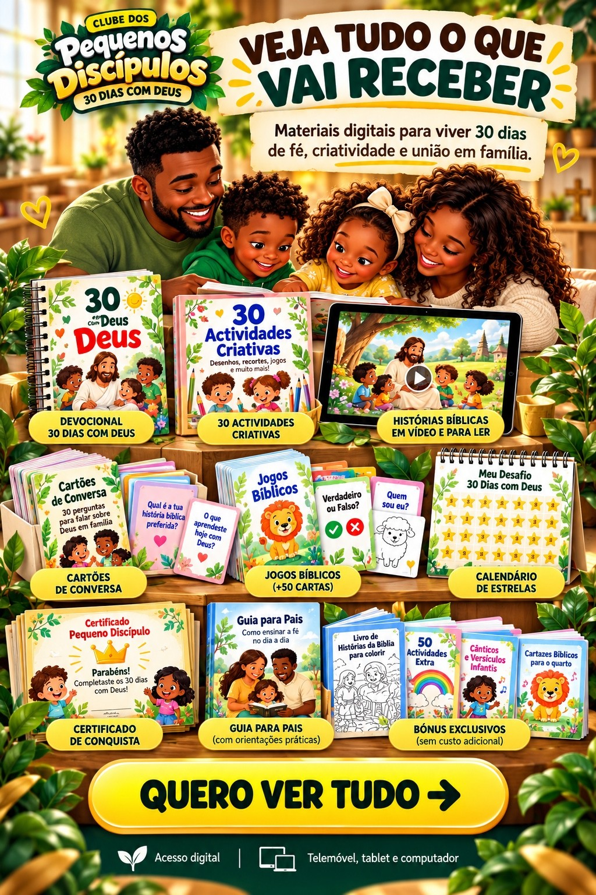
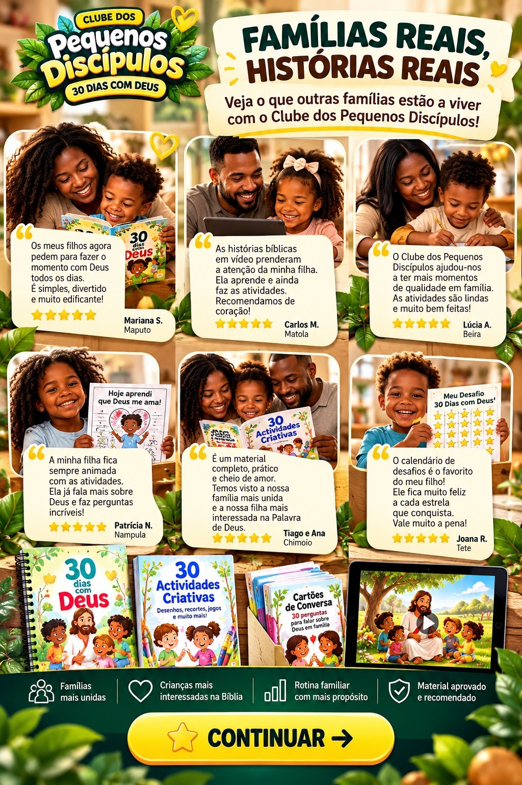
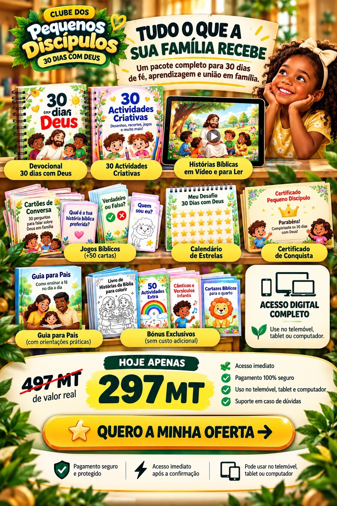

CLUBE DOS PEQUENOS DISCÍPULOS
30 DIAS COM DEUS
Etapa 1 de 9
QUERO COMEÇAR →
QUERO SABER MAIS →
← Voltar
COMO FUNCIONA? →
← Voltar
MOSTRA-ME MAIS →
← Voltar

QUERO VER TUDO →
← Voltar
O QUE MAIS RECEBO? →
← Voltar

CONTINUAR →
← Voltar
JÁ PERCEBI →
← Voltar

QUERO A MINHA OFERTA →
← Voltar
Após clicar, vais para o checkout seguro para concluir a compra.
Clube dos Pequenos Discípulos — 30 Dias com Deus